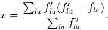

Once the forces are known it is possible to move the atoms until the structure lies in a system energy minimum. AIMPRO uses a conjugate gradient method [40], usually considerably more efficient than alternatives such as `steepest descent'.
If an atom a has forces fla' acting on it in direction l, the atoms are then moved along a conjugate direction dla' so that they are now located at
R'la = Rla + wd'la,
where w is chosen using quadratic or cubic interpolation in order to minimise the free energy. The directions d'la are chosen using
d'la = f'la - xdla,
where dla was the previous search direction with a force of fla, and x, initially zero, is set to

This method is an efficient way of finding a system minimum, however it cannot guarantee finding the global system minimum. Schemes such as genetic algorithms are better for this, but are computationally too expensive for general use. The best way to ensure the result is really a global minimum appears to be attempting several relaxations from different starting structures.
It is also possible to perform constrained relaxations, for example to find saddle points for defect migration. This is discussed further in Section 6.2.1.